Gratis
Con licencia MIT y de código abierto.
NAVEGACIÓN CON TECLADO
Una extensión de Chrome de Noctivagous Software
Apuntar con el ratón.
Activar con el teclado.
Una forma más rápida de moverse por la web.
EL GESTO CENTRAL
Apunte con el ratón. Haga clic con una tecla.


Así se siente usar KeyPilot
Hemos preparado una demostración en miniatura de un navegador web de KeyPilot con dos acciones de tecla. Pase el cursor sobre un enlace y pulse F para abrirlo. Pulse D para volver.
Esta demostración es para ordenador de escritorio, donde puedes usar el ratón y el teclado juntos.
Noticias del puerto
El Heraldo de la Costa
 Las luces del puerto vuelven este fin de semana
Reabren los paseos nocturnos en el muelle
Sobre el Heraldo
Las luces del puerto vuelven este fin de semana
Reabren los paseos nocturnos en el muelle
Sobre el Heraldo
Los equipos terminaron las últimas lámparas del muelle y cierran dos años de restauración.
Los paseos nocturnos reabren tras el ocaso. Los puestos del mercado abren una hora más.
Leer: Reabren los paseos nocturnos en el muelle
El paseo vuelve a estar abierto después del atardecer, con más luz en el muelle.
Los comercios del puerto esperan un fin de semana de otoño con mucho público.
El Heraldo de la Costa cubre el Mediterráneo y las islas desde 1892.
Este periódico en miniatura sirve para probar las teclas F y D de KeyPilot.
EL TECLADO
KeyPilot ofrece un diseño completo de acciones de tecla. Abajo hay una reproducción de la ventana de referencia del teclado, que puede dejar abierta mientras usa el programa. Pase el cursor sobre una tecla para ver qué hace en la distribución de navegación predeterminada.
EN LA PÁGINA


CONTROL BIMODAL
La extensión existe para promover una teoría de interfaz que llamamos control bimodal. Dirija el cursor con el ratón como hasta ahora, pero active con teclas del teclado en lugar de con los botones del ratón. Pase el cursor sobre un enlace y pulse F para hacer clic, o G para abrirlo en una pestaña de fondo. Es rápido. Se llama key-click.
Además de F hay muchas más acciones de tecla. Ahí es donde emerge la potencia de KeyPilot: un diseño de teclado con muchas funciones de key-click, personalizable en el editor Layout Config integrado. Es gratuita y está bajo la licencia MIT.
La animación de key-click de esta página muestra el gesto: apuntar con el ratón, pulsar F para abrir y luego D para volver atrás.
POR QUÉ KEYPILOT
Con licencia MIT y de código abierto.
Un diseño de teclado pensado para el rendimiento.
Las extensiones se instalan al momento.